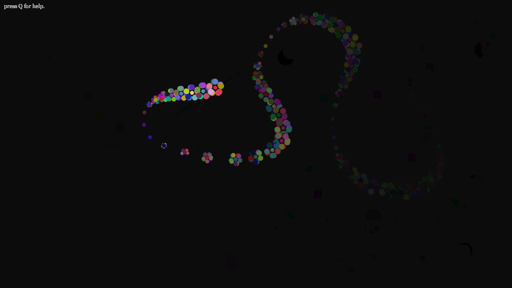
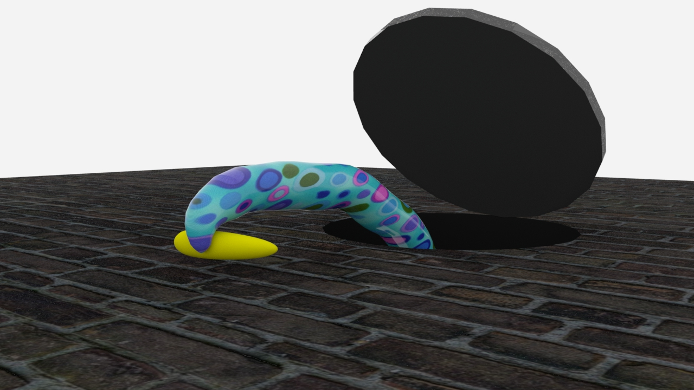

Hello. My name is Queena Situ, and this is my portfolio site.
I am an emerging self-motivated artist who is currently a student at San Jose State Univeristy. I am primarily an illustrator, but I also like working with various digital media.
For this project, I created a series of HTML pages that are linked to each other by word association. The main page is just a string of words that says, "If you are reading this, there is nothing for you to see here. You are wasting your time and this is a bunch of bullshit," letters, and random symbols. However, some of the words - highlighted in red - are links that lead to other pages. I wanted to created a string of sites that did not make sense and simulate an intentional glitch in the system. The links consist of pages with weird music, flashing lights, chicken heads, laughing emus, Drake dance memes, and more text that does not make sense. This was one of my first projects created in HTML at SJSU.

Drawing Tool - Processing
There really wasn't a direction except that I wanted things to be colorful with basic shapes since I am new to Processing and Java. I liked the look of whatever is drawn slowly fading into the background so I kept that with every single drawing tool. Since there are several key bindings for certain effects, I thought that it might be a good idea to create something that can be easily referenced, but also vague to encourage playing with the program.
I created my own "help" menu, which is accessible by simply pressing "Q." I named this algorithm "qsHelpMenu." Numbers 1-3 have bindings for both the left-click and right-click to create variety in one setting. Numbers 4-5 only use the left-click. 6 is the eraser and "X" is to clear the sketch
This exercise was meant to learn more about OOPs, arrays, classes vs objects, and 2D object translation. You can see that there is an array with 50 rainbow balls bouncing off the walls of the sketch and two objects that are translating left to right, and top to bottom, rotating around a focal tiny ellipse that varies in scale. There are also these other two white objects that will move left to right and back with smaller ellipses orbiting them.
In this project, I created my own array called "qsBeachball" for the springy yellow balls that you can click and drag but go back to their original position, and another array called "qsRipples" for the rainbow ripple effect when you mouse left-click anywhere within the confines of the sketch. I tried to make it look like the ocean with the Noise wave effect as water, and some ellipses that translate from left to the right on the screen at different speeds to look like fish swimming. I used frameCount for the object at the top that looks like there are 3 ellipses spinning around something flying. It goes left to right, but slightly changes position and color after a certain number of frames as shown in the video. I'm not sure what to call this, but I would imagine it being something like an alien UFO.
This is a 3D modeled scene in Maya of a tree surrounded by some mirrors. There are water droplets that are frozen in time around the space of the tree. I wanted to create a place that was ethereal and dream-like because I was thinking of a place that we might run away to in our minds. There are times we want to be alone, and most of the time, we can only be truly alone in our own thoughts. I tried to create a space that is meditative, quiet, and isolated to evoke the feeling of solitude. I personally do a lot of self-reflection so I made most of the surfaces of the objects reflective to emphasize this idea of relfection upon oneself.

Feed the Beast - Autodesk Maya and Adobe Premiere
This was a fun project learning how to animate in Maya. I created a scene where a sewer monster smells a banana and extends a tentacle out the manhole to grab it for a meal. I left the background white because I thought that a background would distract from the subject. This project helped me learn about the basics of texturing surfaces using the UV mapper, creating different cameras for various angles, motion tracking, keyframing, and rendering. There isn't really much of a reason why this was the idea for the animation, but it took a long time to render. I tried to render at 1280 x 720 at 60 fps and it took way longer than I expected. From this, I learned the real struggles of rendering at a higher resolution at a higher frame rate and how long it takes to render in real time.
In this project, I created a scene where a mannequin comes to life and walks across the desk towards the lamp. The camera is focused on the mannequin and tracks its movement. Then the camera angle changes to a view from inside the lamp and you see the mannequin waving to the viewers. The walking of the mannequin is hand animated so it looks awkward, but I wanted to show that this was how I felt learning Maya from the beginning. I felt that Maya had a high learning curve and it was awkward learning the controls and functions of the program. At the end of the program, the mannequin is waving at the viewer as if saying, "goodbye." From this, I wanted to show that this was me looking back at what I have learned so far and how far I had come not in just learning Maya, but what I have learned all together at my time at SJSU. There are many things I learned and accepted about myself during my time here at SJSU and I feel like I have grown a lot as an individual. The video is called "Baby Steps" because it took a long time to get to where I am now both academically and as a person.
Food Philanthropy - Adobe Premiere, After Effects, Lightroom
This is just a fun video I made making fun of how some people make an effort to make pictures of their food look good to post it on social media. I think it's funny how far some people might go to take pictures of their food. And so, I took pictures of a plate of chips next to a glass of water to have a more interesting composition. The lighting in the photo is also artificial and most definitely staged to create more interesting and better lights and shadows.
This is a project focused on using a green screen and compositing in After Effects. I took a few shots of my hands taking pictures with my phone in front of a green screen and overlayed them on top of my project. In the video, a sign that says "Editing in Lightroom will slide in at the bottom left and swipe to the right when the video transitions to me photo editing. I created this sign in Illustrator and animated it in After Effects, and the photos of the chips are edited in Lightroom.
I wanted to try my hand at 2D animation byt hand drawing everything frame by frame. The concept for this video was a kind of proof of concept for an idea I had for a future show. It is meant to be about bering overwhelmed by self-inflicted guilt. There are things that happen in our lives that are out of our control, but sotmetimes you just can't help but feel guilty for reasons that only you know of. No one blames you, yet you blame yourself, and this is a reflection of my own life. However, I realized that the only one that can pull you out of that darkness is yourself, and by gaining that strength to help myself, I am confident that I have grown into a stronger person because of it. I came to terms with myself and have accepted that things will happen, but I cannot let these events weigh me down or hold me back from moving forward with life.
Endless Nightmares is a 2D platformer game that I collaborated on with another DMA student. She was the programmer and I was the artist. She did all of the programming and coding while I created most of the visual assets - title page, characters, background, animations - and the music for the game. I also wrote a short story for each level to give it more of a narrative. It was the first time for both of us creating a game in Unity, and there were a couple things we could not figure out in the code. So as a compromise, we focused more on giving the game more content. We also only had 3 weeks to finish the game, and considering our initial skill level and the time we had to create a game, I think we did pretty well.